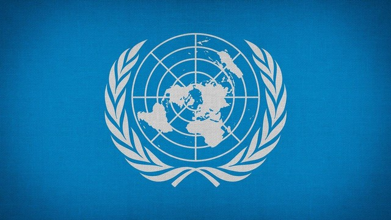
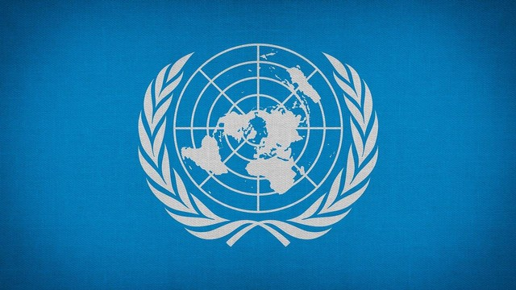

Kerja sama multilateral adalah kerja sama yang dilakukan antara tiga negara atau lebih untuk mencapai tujuan bersama internasional. Kerja sama ini bertujuan untuk menciptakan stabilitas, meningkatkan kesejahteraan antar negara, dan menyelesaikan isu - isu global seperti perdamaian, perubahan iklim, dan perdagangan global. Berbeda dari kerja sama bilateral, multilateral memiliki cakupan yang lebih luas dan kompleks. Kerja sama multilateral sangatlah penting pada era globalisasi ini dalam menangani permasalahan global yang dapat diselesaikan dengan menggabungkan sumber daya dan keahlian dua negara atau lebih. Tujuan dilakukannya kerja sama multilateral antara lain; mempererat persahabatan dan hubungan antar negara, meningkatkan pertumbuhan ekonomi global, mengatasi isu - isu global, seperti perubahan iklim, terorisme, bencana alam, dll, memfasilitasi pertukaran pengetahuan, sumber daya, dan teknologi antar negara.
Contoh kerja sama multilateral
PBB didirikan pada tanggal 24 Oktober 1945 dan dibangun untuk mendorong kerja sama internasional. Organisasi ini dibangun sebagai pengganti Liga Bangsa-Bangsa, setelah Perang Dunia II untuk menghindari konflik terjadi lagi. Kini memiliki sebanyak 193 negara, selain terdiri dari anggota juga memiliki organisasi internasional dengan status pengamat dan pengamat permanen yang memiliki kantor di Markas Besar PBB. Vatikan dan Palestina merupakan pengamat “permanen”. PBB memiliki tujuan untuk mencapai kehidupan yang lebih baik dan lebih berkelanjutan bagi semua di planet ini, sehingga dibentuknya Sustainable Development Goals (SDGs) dengan 17 tujuan.
AFTA terbentuk atas kesepakatan dari negara Asia Tenggara dalam membentuk kawasan perdagangan bebas. Organisasi ini dibentuk untuk meningkatkan daya saing ekonomi Asia Tenggara dengan menjadikan tempat produksi yang kompetitif dan agar dapat menarik lebih banyak Foreign Direct Investment agar dapat negara - negara di kawasan Asia Tenggara semakin terkenal di dunia internasional.
WHO dibangun oleh Amerika bertanggung jawab dalam menangani kesehatan global. Organisasi ini merupakan organisasi kesehatan antar pemerintah terbesar dalam tingkat internasional. Hanya negara - negara berdaulat saja yang dapat berpartisipasi. Tujuan utamanya adalah untuk mencapai tingkat kesehatan tertinggi bagi semua orang di dunia dengan tujuan kesehatan tertinggi yang dimaksud yaitu kesejahteraan dalam fisik, mental, dan kehidupan sosial yang utuh, tidak hanya bebas dari penyakit.
UNESCO atau kepanjangannya United Nations Educational, Scientific and Cultural Organization, merupakan lembaga internasional yang didirikan dibawah naungan PBB pada tahun 1945. Tujuan utamanya untuk mempromosikan kerja sama antar negara dalam bidang pendidikan, ilmu pengetahuan, dan kebudayaan.